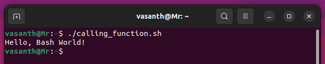
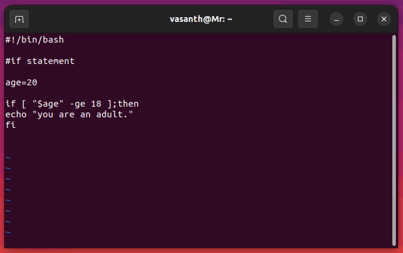
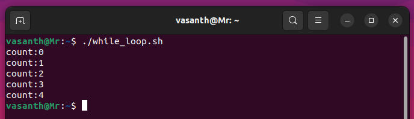
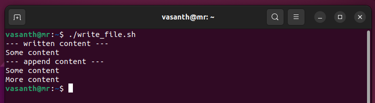
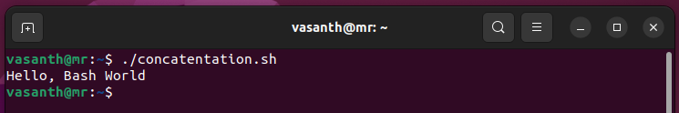
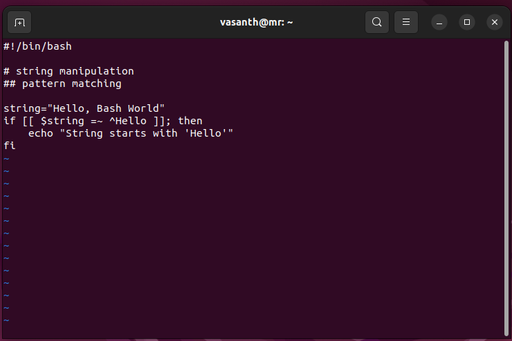

Bash Scripting
the Bash shell in a Linux environment.
Introduction to Bash
Bash (Bourne Again Shell) is the default shell in most Linux distributions. It provides a powerful command-line interface for interacting with the operating system and running scripts.
Why does a script have to start with #!?
The #! (shebang) sequence at the beginning of a script serves as an instruction to the system on how to execute the script. Here's why it's necessary:
-
Identifies the Interpreter: The
#!sequence is followed by the path to the interpreter (e.g.,/bin/bash,/usr/bin/python, etc.) that should be used to execute the script. This tells the system which program should interpret and execute the commands within the script. -
Ensures Portability: Including the shebang line makes the script more portable across different systems. Even if the interpreter is located in a different directory on another system, the system will use the interpreter specified in the shebang line.
-
Defines the Script's Language: The shebang line also specifies the scripting language of the script. For example,
#!/bin/bashindicates that the script is written in the Bash scripting language. -
Execution Permission: Without the shebang line, the script may not execute properly or may be interpreted by the wrong program. The shebang line ensures that the script is executed with the intended interpreter.
In summary, the shebang line at the beginning of a script is essential for specifying the interpreter to use when executing the script, ensuring portability, defining the scripting language, and enabling proper execution of the script.
Creating a Bash Script
Learn the basic steps to create and run a Bash script.
Steps:
- Create a New File: Open a terminal and type the following command to create a new file with the
.shextension using thevitext editor:
bash
vi myscript.sh
This command will open the vi editor with a new file named myscript.sh.
- Write Your Script: Once the file is opened in
vi, you can start writing your Bash commands. Pressito enter insert mode, then start typing your script. Here's a simple example:
```bash #!/bin/bash
# This is a simple Bash script echo "Hello, Bash World!" ```
After writing your script, press Esc to exit insert mode, then type :wq and press Enter to save and exit vi.
- Set Execution Permission: Make the script executable using the
chmodcommand:
bash
chmod +x myscript.sh
This command gives execute permission to the script file.
- Run the Script: Execute the script using
./followed by the script name:
bash
./myscript.sh
This command runs the script, and you should see the output "Hello, World!" printed in the terminal.
By following these steps and using the vi editor, you can easily create and run Bash scripts to automate tasks or perform various operations in the Linux environment.
Basic Syntax
Understand the fundamental elements of Bash scripting syntax.
Variables
Learn how to define and use variables to store data.
Variables in Bash are used to store data such as strings, numbers, or other values. They provide a way to reference and manipulate data throughout a script. Here's how you define and use variables in Bash:
Variable Declaration
Variables in Bash are typically declared by assigning a value to them. Unlike some other programming languages, you don't need to specify a data type for a variable in Bash. Here's a simple example:
```bash name="vasanth" date=24-04-2024
In this example, name is assigned the string value "vasanth", and date is assigned the numeric value 24-04-2024.

#### Variable Naming Convention
When naming variables in Bash, it's recommended to use descriptive names that reflect their purpose. Variable names can consist of letters, numbers, and underscores (_), but they must start with a letter or an underscore. Additionally, variable names are case-sensitive.
#### Variable Usage
You can reference the value of a variable using the $ symbol followed by the variable name. Here's how you use variables in Bash commands:
```bash
echo "Name: $name"
echo "date: $date"
This will output:
Name:vasanth
date:24-04-2024
Read-Only Variables
You can declare a variable as read-only using the readonly command. Once a variable is marked as read-only, its value cannot be changed. Here's an example:
readonly readonly_var="This variable is read-only"
readonly_var="New value" # This will result in an error
Environment Variables
Bash also provides access to environment variables, which are variables that are predefined by the operating system or the shell itself. You can access environment variables using the $ symbol followed by the variable name. For example:
echo "Home directory: $HOME"
echo "Current user: $USER"
These commands will display the home directory and the current user, respectively.
use variables in Bash is fundamental for writing effective scripts. They allow you to store and manipulate data dynamically, making your scripts more versatile and powerful.
Functions
Explore the creation and usage of functions for modularizing script code.
Functions in Bash scripting provide a way to encapsulate a sequence of commands into a single block of code that can be reused throughout the script. Let's explore how to create and use functions:
Declaration
To declare a function in Bash, you use the following syntax:
function_name() {
# commands
}
Here's an example of defining a simple function called greet:
greet() {
echo "Hello, Bash World!"
}

Calling Functions
Once a function is defined, you can call it by simply typing its name followed by parentheses. Here's how you call the greet function:
greet

Passing Arguments to Functions
You can pass arguments to functions in Bash. Within the function, these arguments are accessed using special variables $1, $2, etc. Here's an example:
greet() {
echo "Hello, $1!"
}
# Call the function with an argument
greet "i'm Mr.Cloud Explorer"
This will output "Hello, i'm Mr.Cloud Explorer!".
Returning Values from Functions
Bash functions can return values using the return statement. The return value can be accessed using the special variable $?. Here's an example:
add() {
local result=$(( $1 + $2 ))
return $result
}
# Call the function and capture the return value
add 5 3
sum=$?
echo "The sum is $sum"
This will output "The sum is 8".

Local Variables
Variables declared within a function are local to that function by default. They are not accessible outside the function. To declare a variable as local explicitly, use the local keyword. Example:
greet() {
local name="Bash World"
echo "Hello, $name!"
}
greet
This will output "Hello,Bash World!"
Function Scope
Functions have their own scope in Bash. Variables declared outside a function (global variables) are accessible inside the function, but variables declared inside a function are not accessible outside it.
Conditional Statements
Learn how to use conditional statements like if, elif, and else for decision-making in scripts.
Conditional statements in Bash scripting allow you to make decisions and execute different parts of code based on specified conditions. Let's explore how to use conditional statements such as if, elif, and else:
if Statement
The if statement in Bash allows you to execute a block of code if a specified condition is true. Here's the basic syntax:
if [ condition ]; then
# code to execute if condition is true
fi
For example:
if [ "$age" -ge 18 ]; then
echo "You are an adult."
fi

In this example, if the variable age is greater than or equal to 18, the message "You are an adult." will be printed.
elif Statement
The elif statement allows you to check additional conditions if the initial if condition is false. Here's the syntax:
if [ condition1 ]; then
# code to execute if condition1 is true
elif [ condition2 ]; then
# code to execute if condition2 is true
else
# code to execute if all conditions are false
fi
For example:
if [ "$age" -ge 18 ]; then
echo "You are an adult."
elif [ "$age" -ge 13 ]; then
echo "You are a teenager."
else
echo "You are a child."
fi
In this example, if the age is between 13 and 17 (inclusive), the message "You are a teenager." will be printed.
else Statement
The else statement is used to execute a block of code if none of the previous conditions in the if statement or elif statements are true. Here's the syntax:
if [ condition ]; then
# code to execute if condition is true
else
# code to execute if condition is false
fi
For example:
if [ "$status" = "success" ]; then
echo "Operation successful."
else
echo "Operation failed."
fi
In this example, if the status variable is equal to "success", the message "Operation successful." will be printed; otherwise, "Operation failed." will be printed.
Conditional statements are powerful tools for implementing decision-making logic in Bash scripts, allowing your scripts to respond dynamically to different situations.
Loops
Understand different types of loops such as for and while for repetitive tasks in scripts.
Loops in Bash scripting allow you to execute a block of code repeatedly. There are different types of loops available, such as for, while, and until. Let's explore how to use these loops:
for Loop
The for loop is used to iterate over a list of items and execute a block of code for each item in the list. Here's the basic syntax:
for item in list; do
# code to execute for each item
done
For example:
for num in 1 2 3 4 5; do
echo "Number: $num"
done
In this example, the loop will iterate over the numbers 1 through 5 and print each number.

while Loop
The while loop is used to execute a block of code repeatedly as long as a specified condition is true. Here's the basic syntax:
while [ condition ]; do
# code to execute while condition is true
done
For example:
count=0
while [ $count -lt 5 ]; do
echo "Count: $count"
((count++))
done
In this example, the loop will continue executing as long as the value of the count variable is less than 5.

until Loop
The until loop is similar to the while loop, but it continues executing until a specified condition becomes true. Here's the basic syntax:
until [ condition ]; do
# code to execute until condition becomes true
done
For example:
num=0
until [ $num -ge 5 ]; do
echo "Number: $num"
((num++))
done
In this example, the loop will continue executing until the value of the num variable is greater than or equal to 5.
Loops are powerful tools for automating repetitive tasks in Bash scripts, allowing you to process data efficiently and perform complex operations.
Advanced Topics
Explore advanced features and techniques in Bash scripting.
File Manipulation
Discover commands and techniques for creating, reading, writing, and managing files.
File manipulation is a fundamental aspect of Bash scripting, allowing you to perform various operations on files, such as creating, reading, writing, and managing them. Let's explore some commands and techniques for file manipulation:
Creating Files
You can create new files using the touch command or by using redirection operators with echo or cat commands. For example:
touch newfile.txt
# Create an empty file named newfile.txt
echo "Hello, Bash World!" > greeting.txt
# Create a file greeting.txt with content
This is the output of that script
Reading Files
To read the contents of a file, you can use commands like cat, head, tail, or less. For example:
echo "---dispalyed entire contents---"
cat filename.txt
#Display the entire contents of filename.txt
echo "---dispalyed first 3 lines---"
head -n 3 filename.txt
# Display the first 10 lines of filename.txt
echo "---dispalyed last 3 lines---"
tail -n 3 filename.txt
# Display the last 20 lines of filename.txt
This is the output of that script
Writing to Files
You can write content to files using redirection operators (> or >>) with echo or cat commands. For example:
echo "Some content" > output.txt
# Write content to output.txt (overwrite if exists)
echo "--- written content ---"
cat output.txt
echo "More content" >> output.txt
# Append content to output.txt
echo "--- append content ---"
cat output.txt
This is the output of that script

Copying, Moving, and Renaming Files
The cp command is used to copy files, mv command to move or rename files. For example:
# file manipulation
## copying, moving, and renameing files
cp source.txt destination.txt
# Copy source.txt to destination.txt
echo "--- copyed file ---"
ls source.txt destination.txt
mv oldfile.txt newfile.txt
# Rename oldfile.txt to newfile.txt
echo "--- renamed file ---"
ls oldfile.txt newfile.txt
mv file.txt folder/file.txt
# Move file.txt to a different directory
echo "--- moved file ---"
ls file.txt
ls folder/file.txt
This is the output of that script
Deleting Files
To delete files, you can use the rm command. Be cautious when using rm as it permanently deletes files. For example:
echo "--- delete unwanted file ---"
ls unwantedfile.txt
rm unwantedfile.txt
# Delete unwantedfile.txt
echo "--- deleted unwanted file ---"
ls unwantedfile.txt
echo "--- delete unwanted directory ---"
find folder
rm -rf directory
# Delete directory and its contents recursively (use with caution)
echo "--- deleted unwanted directory ---"
find folder
This is the output of that script
Permissions and Ownership
Use the chmod command to change file permissions and the chown command to change file ownership. For example:
echo "--- add permission 'e' ---"
ls -la script.sh
chmod +x script.sh
# Add execute permission to script.sh
echo "--- added permission 'e' ---"
ls -la script.sh
echo "--- add ownership ---"
ls -la file.txt
sudo chown user:group file.txt
# Change the owner and group of file.txt
echo "--- added ownership ---"
ls -la file.txt
This is the output of that script
File Compression and Archiving
You can compress files using commands like gzip, bzip2, or zip, and archive files using the tar command. For example:
echo "--- compress file ---"
ls -l file.txt
gzip file.txt
# Compress filename.txt using gzip
echo "--- compressed file ---"
ls -l file.txt.gz
echo "--- archive files ---"
ls -l archive.tar.gz
tar -czvf archive.tar.gz file1 file2
# Create a gzipped tar archive containing file1 and file2
echo "--- archived files ---"
ls -l archive.tar.gz
This is the output of that script
File manipulation commands and techniques in Bash scripting are essential for working with files efficiently and managing file operations effectively.
String Manipulation
Learn about string manipulation operations such as concatenation, substring extraction, and pattern matching.
String manipulation in Bash scripting involves various operations for manipulating strings, such as concatenation, substring extraction, and pattern matching. Let's explore some common string manipulation techniques:
Concatenation
You can concatenate strings using the concatenation operator (+) or by simply placing them next to each other. For example:
string1="Hello"
string2="Bash"
string3="World"
concatenated="$string1, $string2 $string3"
echo $concatenated
This is the output of that script

Substring Extraction
To extract a substring from a string, you can use parameter expansion with the ${string:position:length} syntax. For example:
string="Hello, Bash World"
substring=${string:0:5}
echo $substring
This is the output of that script
Length of a String
To find the length of a string, you can use parameter expansion with the ${#string} syntax. For example:
string="Hello, Bash World"
length=${#string}
echo $length
This is the output of that script
Pattern Matching
Pattern matching allows you to match and manipulate strings based on specific patterns or regular expressions. You can use tools like grep, sed, and awk for pattern matching operations. For example:
string="Hello, Bash World"
if [[ $string =~ ^Hello ]]; then
echo "String starts with 'Hello'"
fi
In this example, the =~ operator is used to match the string against the regular expression ^Hello, which checks if the string starts with "Hello".

This is the output of that script
String Replacement
You can replace substrings within a string using parameter expansion with the ${string/pattern/replacement} syntax. For example:
string="Hello, World"
replaced=${string/Hello/Hi}
echo $replaced
This is the output of that script
String manipulation operations in Bash scripting allow you to manipulate and transform strings effectively, enabling you to perform complex text processing tasks within your scripts.
Command Substitution
Understand how to use command substitution to capture and use the output of commands within scripts.
Error Handling
Explore strategies for handling errors and unexpected conditions in scripts.
Error handling is an essential aspect of Bash scripting, allowing you to gracefully handle errors and unexpected conditions that may occur during script execution. Let's explore some strategies for error handling in Bash scripts:
Exit Status
Every command executed in Bash returns an exit status, which indicates whether the command succeeded or failed. By convention, an exit status of 0 indicates success, while a non-zero exit status indicates failure. You can check the exit status of the previous command using the special variable $?. For example:
command
if [ $? -ne 0 ]; then
echo "Command failed."
fi
{kind=link}
This is the output of that script

Error Messages
You can display custom error messages using the echo command or redirecting them to standard error (stderr) using file descriptor 2. For example:
if [ ! -f filename ]; then
echo "Error: File not found." >&2
exit 1
fi
This is the output of that script
Exiting on Error
You can use the set -e option to make your script exit immediately if any command exits with a non-zero status. For example:
set -e
command1
command2
This is the output of that script
Error Handling Functions
You can define functions to handle errors and call them when errors occur. For example:
handle_error() {
echo "Error: $1" >&2
exit 1
}
# Usage
if [ ! -f filename ]; then
handle_error "File not found."
fi
This is the output of that script
Trap Signals
You can use the trap command to trap signals and execute custom error-handling code when a signal is received. For example:
cleanup() {
echo "Cleaning up..."
# Additional cleanup tasks
}
trap cleanup EXIT
This is the output of that script
Error handling in Bash scripting ensures that your scripts are robust and can gracefully handle unexpected situations, improving reliability and user experience.
Script Packaging
Packaging Bash scripts involves creating standalone executables, adding documentation, managing dependencies, and distributing scripts as packages or installers.
Packaging Bash scripts allows you to distribute them as standalone executables or packages, making it easier for users to install and use your scripts. Let's explore some techniques for packaging Bash scripts:
Standalone Executables
To create a standalone executable from a Bash script, you can use tools like shc (Bash script compiler) or makeself. These tools bundle your script and its dependencies into a single executable file, making it easy to distribute and execute on different systems.
shc -f script.sh
This is the output of that script
Adding Documentation
Adding documentation to your Bash scripts improves usability and helps users understand how to use your scripts. You can add comments at the beginning of your script to provide a description, usage instructions, and any other relevant information.
#!/bin/bash
# Script Name: myscript.sh
# Description: This script performs a specific task.
# Usage: ./myscript.sh [options]
# Options: -h, --help Display help message
# -v, --version Display script version
This is the output of that script
Managing Dependencies
If your script relies on external commands or programs, you should document these dependencies and provide instructions for installing them. You can also check for dependencies programmatically and provide informative error messages if they are missing.
# Check if required commands are installed
command -v <command> >/dev/null 2>&1 || { echo >&2 "Required command <command> not found. Aborting."; exit 1; }
This is the output of that script
Distributing as Packages or Installers
For more complex scripts or projects with multiple files, you can package them as distribution packages (e.g., .deb for Debian-based systems or .rpm for Red Hat-based systems) or installers (e.g., .exe for Windows). Tools like fpm (Effing Package Management) or debreate can help you create distribution packages easily.
fpm -s dir -t deb -n mypackage -v 1.0.0 /path/to/scripts
This is the output of that script
Packaging Bash scripts simplifies distribution and installation, making your scripts more accessible to users and improving the overall user experience.
Bash scripting automate tasks, create custom tools, and enhance your productivity in the Linux environment. learning the basics, mastering syntax, and exploring advanced topics, you can become proficient in scripting with Bash.
Bash Scripting with Real-Time Tasks
learn about Bash scripting through real-time Tasks commonly encountered in Linux environments.